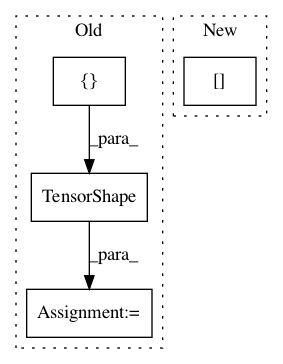

47c71c0524c7804863f2f4bcffdef5a873d84a55,txtgen/modules/connectors/connectors.py,,_mlp_transform,#Any#Any#Any#,18
Before Change
concat_input = tf.concat(flat_input, 1)
// get output dimension
iter_output_size = output_size if isinstance(output_size, (list, tuple)) else [output_size]
shape_list = [tf.TensorShape(shape) for shape in iter_output_size]
size_list = [0] * len(shape_list)
for (i, shape) in enumerate(shape_list):
size_list[i] = reduce(lambda x, y: x*y, [dim.value for dim in shape])
sum_output_size = sum(size_list)
fc_output = tf.contrib.layers.fully_connected(
concat_input, sum_output_size, activation_fn=activation_fn)
flat_output = tf.split(fc_output, size_list, axis=1)
for (i, shape) in enumerate(shape_list):
flat_output[i] = tf.reshape(flat_output[i], tf.TensorShape(batch_size).concatenate(shape))
output = nest.pack_sequence_as(structure=output_size, flat_sequence=flat_output)
return output
After Change
// get output dimension
flat_output_size = nest.flatten(output_size)
if isinstance(flat_output_size[0], tf.TensorShape):
size_list = [0] * len(flat_output_size)
for (i, shape) in enumerate(flat_output_size):
size_list[i] = reduce(lambda x, y: x*y,
In pattern: SUPERPATTERN
Frequency: 3
Non-data size: 4
Instances
Project Name: asyml/texar
Commit Name: 47c71c0524c7804863f2f4bcffdef5a873d84a55
Time: 2017-10-16
Author: junxianh2@gmail.com
File Name: txtgen/modules/connectors/connectors.py
Class Name:
Method Name: _mlp_transform
Project Name: tensorflow/models
Commit Name: e6ffa05700c366550a9bb1cac1e8235c57f06952
Time: 2020-09-16
Author: hongkuny@google.com
File Name: official/nlp/modeling/layers/transformer_scaffold.py
Class Name: TransformerScaffold
Method Name: build
Project Name: onnx/onnx-tensorflow
Commit Name: 52fbf7b4ac45472fd1d0ae8e5ea169efb8552f8b
Time: 2020-11-03
Author: wtsang@us.ibm.com
File Name: onnx_tf/handlers/backend/non_max_suppression.py
Class Name: NonMaxSuppression
Method Name: _common